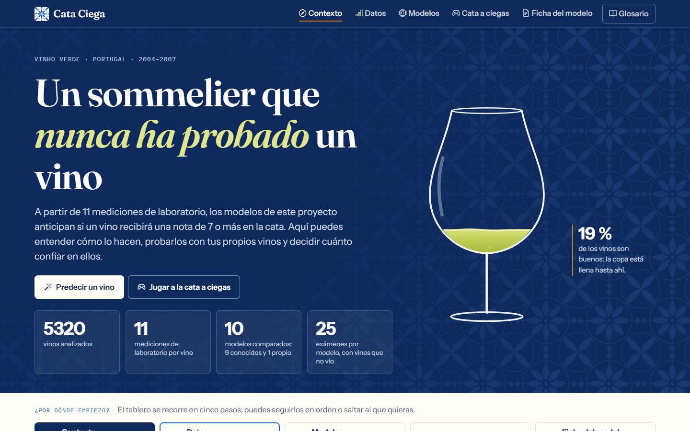
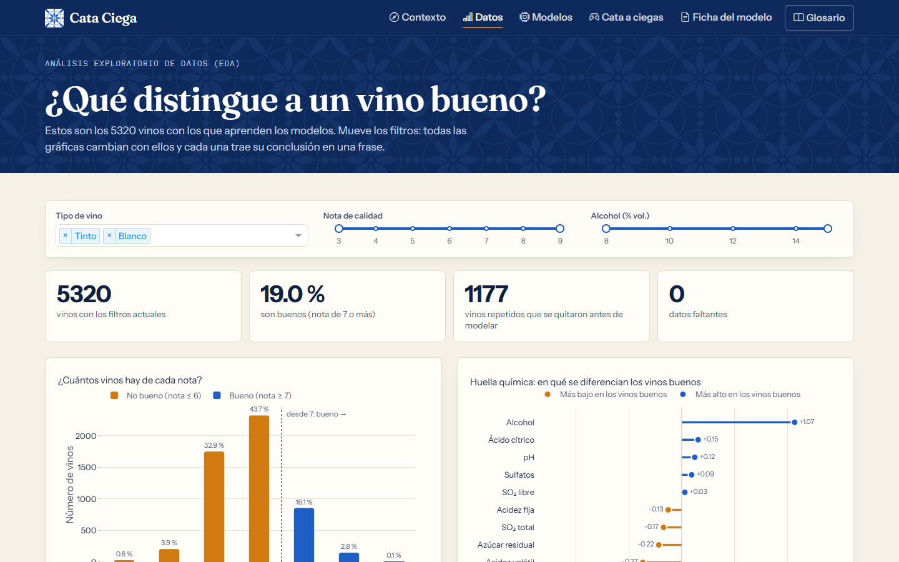
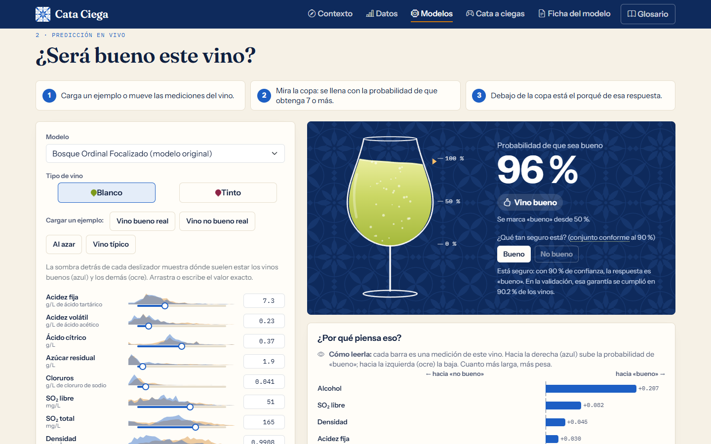
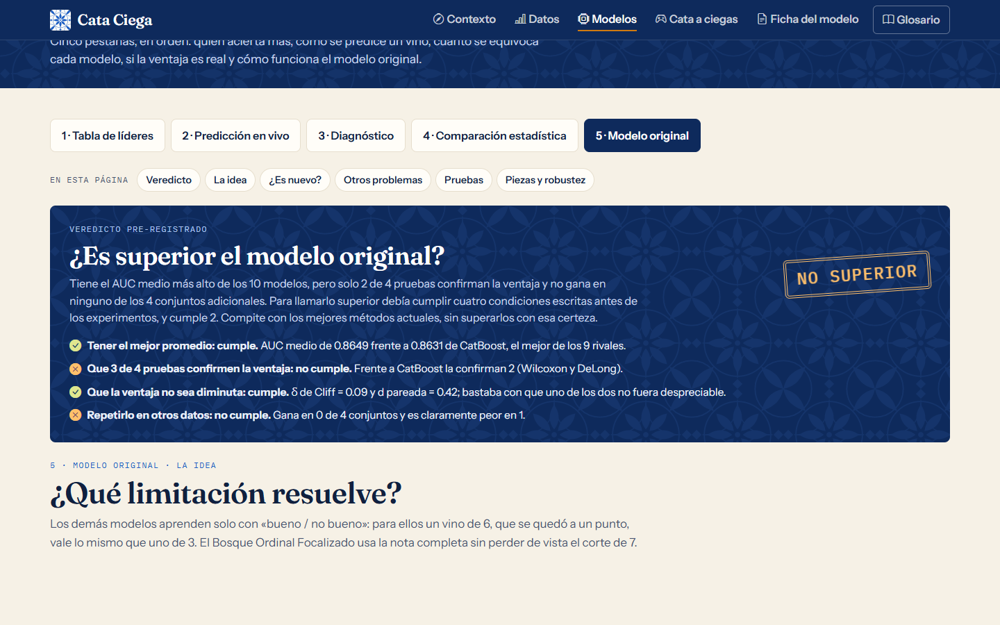

Dashboard y despliegue#
El dashboard, llamado Cata Ciega, lleva los resultados a una aplicación web que una persona no experta puede usar para entender el problema, explorar los datos, predecir la calidad de un vino nuevo y decidir cuánto confiar en esa predicción. Se construyó con Dash, dash-bootstrap-components y Plotly, y se despliega en Render con gunicorn. Cada bloque está escrito como la pregunta de un usuario real («¿Qué distingue a un vino bueno?», «¿Será bueno este vino?», «¿Puedo confiar en él?», «¿La diferencia es real o es suerte?») y cada gráfica trae una frase de lectura que se recalcula con los datos.
Arquitectura#
app.py crea la app (use_pages=True), la barra de navegación fija, el telón de transición y expone server
pages/contexto.py sección 1: problema, pregunta, datos, tabla periódica de variables, metodología, conclusión y límites
pages/eda.py sección 2: filtros globales, distribuciones, huella química, correlaciones, explorador bivariado y atípicos
pages/modelos.py sección 3: pestañas de líderes, predicción, diagnóstico, comparación y modelo original, y sus callbacks
pages/cata.py juego de cata a ciegas que enseña qué mide el AUC
pages/ficha.py ficha del modelo y declaración de los datos
src/data.py carga única de datos, esquema de entrada, caché de tablas y un solo modelo en memoria
src/plots.py funciones de graficación reutilizables y plantilla Plotly común
src/prediccion.py validación de entradas, predicción, vinos gemelos, palancas y evaluación de lotes
src/explicaciones.py explicaciones SHAP de cada modelo final
src/tablero.py piezas comunes: encabezados, tarjetas, lecturas, cifras, glosario y avisos de resultados pendientes
src/tablero_modelos.py contenido de las pestañas de Modelos
src/tablero_original.py contenido de la pestaña del modelo original
assets/estilos.css identidad visual, rejilla, animaciones y adaptación a pantallas pequeñas
assets/cata.js copa animada, telón de azulejos, cava, mosaico de decisión, núcleo y juego (callbacks del lado del cliente)
assets/azulejos/roseta.svg azulejo usado como patrón en todo el tablero
artifacts/ modelos finales serializados con metadata.json
data/app/ resultados precalculados (tablas, predicciones fuera de muestra, SHAP global, umbrales conformes, juego)
La interfaz (páginas y assets/), la lógica de datos (src/) y los artefactos (artifacts/, data/app/) están separados. El servidor nunca entrena ni optimiza modelos: carga cada artefacto serializado cuando se usa y mantiene en memoria solo uno a la vez (libera el anterior antes de cargar el siguiente); las tablas se guardan con functools.lru_cache; todo lo demás (curvas, pruebas, SHAP global, robustez, datos del juego) se precalcula con experiments/preparar_app.py. Lo que todavía no se ha calculado se muestra como «resultado en preparación», nunca con cifras simuladas.
Secciones#
Contexto. Una portada con una copa animada llena hasta la proporción real de vinos buenos (19 %); por qué importa, con una cifra citada (la producción mundial de vino de 2023, la más baja desde 1961, OIV 2024); la pregunta de investigación y los objetivos; la fuente, el periodo, la licencia, el tamaño y el tipo de tarea; una «tabla periódica» con las 12 variables, que muestra al voltear cada baldosa qué mide la variable y su correlación con la nota; la metodología como una ruta de nueve estaciones agrupadas por entrega; la conclusión principal con el veredicto; limitaciones, ética, autores, versión y referencias.
EDA. Una fila fija de filtros globales (tipo de vino, rango de nota y rango de alcohol) actualiza todas las gráficas mediante callbacks: cifras clave, la distribución de la nota con las dos clases, la «huella química» (cuántas desviaciones estándar se separan los vinos buenos en cada variable), el mural de correlaciones, la distribución y los atípicos de la variable elegida, un explorador bivariado con selección de ejes y color, la misma pareja animada nota por nota y una tabla de valores faltantes y atípicos.
Modelos. Cinco pestañas, accesibles también por enlace directo (/modelos?pestana=…):
Tabla de líderes: una cava de diez botellas que se llenan según la métrica elegida (AUC, PR-AUC o Brier) y se reordenan con animación; la
dash_table.DataTableordenable y filtrable con la mejor combinación de cada modelo, el AUC medio ± desviación estándar en las 25 particiones, el intervalo bootstrap, PR-AUC, Brier, F1, el tiempo de inferencia y el tamaño del artefacto; el costo frente a la exactitud; y el mural del torneo de 136 combinaciones del Entregable 2.Predicción en vivo: una ficha de laboratorio generada a partir del esquema de variables, con un deslizador por variable sobre la silueta de su distribución en vinos buenos y no buenos, un campo numérico validado, selector de modelo y botones para cargar un vino real bueno, uno no bueno, uno al azar o los valores medianos. La salida muestra una copa que se llena con la probabilidad, la clase, el conjunto conforme al 90 % con su cobertura, la explicación local SHAP como una balanza de aportes, las notas de los cinco vinos reales más parecidos, los cambios de una sola variable que más subirían la probabilidad y, con el modelo original, la distribución predicha de la nota. Un lote completo se puede evaluar subiendo un CSV y descargar ordenado.
Diagnóstico: un mosaico de 100 vinos, la matriz de confusión, la precisión, la sensibilidad y el F1 que cambian al mover el umbral; un umbral sugerido según el costo relativo de perder un vino bueno; curvas ROC y de precisión–sensibilidad con el umbral marcado; curva de calibración e importancia SHAP global del modelo elegido, todo con las predicciones fuera de muestra de la validación.
Comparación estadística: diagrama de diferencia crítica de Nemenyi con el modelo original incluido, el AUC de cada bloque, el duelo bloque por bloque frente al rival elegido, los cuatro jueces de la regla de superioridad con su p-valor ajustado, la prueba bayesiana y las tablas de pruebas.
Modelo original: veredicto explícito de superioridad según la regla pre-registrada, la limitación que resuelve, un explorador interactivo del núcleo que reparte el peso entre umbrales, el funcionamiento en cuatro pasos y el pseudocódigo, la evidencia de novedad, los conjuntos adicionales, las pruebas frente a cada rival, la ablación, la curva de convergencia, la sensibilidad y el resumen de robustez.
Cata a ciegas. En cada ronda aparecen dos vinos reales, uno bueno y uno no bueno, con su química enfrentada; el usuario elige el bueno y luego ve qué eligió el modelo original y la nota real. Elegir el mejor de dos vinos es exactamente lo que mide el AUC, así que el juego explica la métrica principal sin fórmulas. Las probabilidades vienen de modelos que no vieron esos vinos.
Ficha del modelo. Muestra MODEL_CARD.md y data/DATA_STATEMENT.md dentro de la aplicación.
Decisiones de diseño#
Identidad. Vinho Verde es una denominación del norte de Portugal, así que el tablero usa como motivo el azulejo portugués: un mismo azulejo dibujado en SVG sirve de patrón de fondo, de friso, de logotipo y de telón animado entre páginas. Los datos también se presentan como baldosas (la tabla periódica, el mural de correlaciones, el mosaico de 100 vinos y el duelo de 25 bloques).
Paleta limitada a cinco colores. Cobalto para la clase «bueno» y para el modelo original; ocre para la clase «no bueno», el rival y las alertas; vino y verde solo para distinguir tintos y blancos; y una tinta azul oscura con sus grises para el texto. Los pares cobalto–ocre y vino–verde se validaron contra daltonismo (protanopía y deuteranopía) y contraste; como ocre y verde se confunden con daltonismo, nunca aparecen juntos en una gráfica. Las correlaciones usan una escala divergente ocre–crema–cobalto con el neutro en cero.
Una idea por gráfica. En las comparaciones se resalta el modelo original y el resto queda en gris, en lugar de usar diez colores.
Lectura y glosario. Toda gráfica tiene título, ejes con unidades, leyenda cuando hay dos o más series, información al pasar el cursor y una frase de interpretación. Los términos técnicos (AUC, SHAP, conjunto conforme, Nemenyi, Holm…) muestran su definición en lenguaje sencillo al pasar el cursor o al enfocarlos con el teclado.
Animación con propósito. La copa se llena con la probabilidad y el líquido se agita cuando cambia; la cava se reordena al cambiar de métrica; las baldosas se voltean al aparecer o al filtrar. Las animaciones se apagan si el sistema pide reducir el movimiento.
Robustez. El formulario valida tipos y rangos, y los errores se muestran con
dbc.Alert(por ejemplo, «Alcohol: 30 está fuera del rango válido (7.31 a 15.59 % vol.)»). Un archivo de lote con columnas faltantes o filas inválidas se informa fila por fila, y cualquier excepción del cálculo se informa sin detener la aplicación.Lenguaje para no expertos. Cada recuadro de lectura abre con la conclusión en una frase sencilla y deja después las cifras; las gráficas poco comunes (diagrama de diferencia crítica, curva ROC, calibración) llevan una línea «Cómo leerla». El botón «Glosario» de la barra abre un panel con una guía rápida y 47 definiciones con buscador, y tocar cualquier término subrayado lo abre en su definición. Las métricas se traducen a hechos contables: un AUC de 0.865 se muestra como «86 de cada 100 parejas de vinos bien ordenadas» y la matriz de confusión, como lo que pasa con 100 vinos.
Preguntas para adivinar. Antes de los resultados clave (la conclusión, la medición que más separa a los vinos buenos, el tipo de modelo que gana, cuántos vinos buenos encuentra el modelo y si la ventaja es real) la página plantea una pregunta de opción múltiple; al responder se revela la respuesta con su explicación. Las respuestas correctas se calculan con los datos, y una barra de progreso de lectura en el borde superior indica cuánto falta de cada página.
Recorrido guiado. Las cinco páginas forman una ruta numerada que aparece al final de cada una con el paso siguiente; las pestañas de Modelos están numeradas, cada una termina con un botón hacia la siguiente y la pestaña activa queda en la URL. El juego ofrece pistas opcionales con lo que el EDA encontró sobre los vinos buenos.
Rendimiento y memoria. Las pestañas se renderizan solo cuando se abren. La cava, el mosaico de decisión, el núcleo y el juego corren en el navegador con callbacks del lado del cliente, sin ir al servidor. El plan gratuito de Render tiene 512 MB de memoria, así que solo el último modelo usado queda en memoria y las explicaciones SHAP no se guardan entre consultas. En los bosques (el modelo original y Random Forest), el SHAP exacto se calcula por bloques de 25 árboles: por linealidad, el del bosque es la suma del de sus bloques. SVM, KNN y Naive Bayes usan valores de Shapley por permutaciones antitéticas programados con numpy. En un contenedor Linux con los mismos límites del plan gratuito (512 MB y 0.1 CPU), el pico de memoria tras pedir una predicción explicada a cada uno de los 10 modelos fue de 460 MB; la explicación más lenta (la del modelo original) tardó unos 8 s, y
requirements.txtusa la versión de XGBoost sin GPU (xgboost-cpu, la misma 3.4.1), cuya rueda para Linux pesa 5.5 MB en lugar de 55 MB.Responsividad. La rejilla
dbc.Row/dbc.Colreorganiza el contenido en tablet y teléfono; la barra de navegación se colapsa en un menú y el juego pasa a dos columnas con la comparación debajo.Accesibilidad. Contraste suficiente, etiquetas en todos los controles, enlace para saltar al contenido, foco visible y textos alternativos en las copas y los mosaicos. La información nunca depende solo del color: la clase va escrita, las baldosas del mosaico llevan un símbolo (✓, ○, !) y los sellos de los jueces dicen su veredicto.
Capturas#


Figura 23 Sección Contexto: la portada con la copa llena hasta la proporción de vinos buenos.#


Figura 24 Sección EDA con los filtros globales.#


Figura 25 Predicción en vivo con el modelo original: copa con la probabilidad, conjunto conforme, explicación SHAP local, vinos gemelos y palancas.#


Figura 26 Pestaña del modelo original con el veredicto de superioridad.#
Artefactos y ficha del modelo#
Cada modelo final está en artifacts/<modelo>/ con modelo.joblib (comprimido con joblib.dump(..., compress=3)), metadata.json (versiones de las librerías, semilla, hiperparámetros finales, esquema de entrada con rangos válidos, métricas del bucle externo, tamaño, huella SHA-256 y resultado de la prueba de ida y vuelta) y prediccion_referencia.csv (predicciones de 200 vinos fijos). La ficha del modelo original (MODEL_CARD.md) sigue a Mitchell et al. [2019] y la declaración de los datos a Bender and Friedman [2018].
Guía de despliegue#
Verificar en local:
python app.pyabre la aplicación en http://127.0.0.1:8050 yapp.serverqueda expuesto para gunicorn.Fijar el entorno:
requirements.txttiene versiones exactas (incluidogunicorn) y.python-versionfija Python 3.12.14.Subir el repositorio a GitHub.
En Render, crear un Blueprint con el
render.yamlde la raíz (o un Web Service con carpeta raízentregable3,pip install -r requirements.txtcomo comando de construcción ygunicorn app:server --workers 1 --threads 4 --timeout 120como comando de inicio).Revisar los registros de construcción y probar todas las páginas y callbacks en la URL pública. En el plan gratuito el servicio se suspende sin tráfico y la primera visita tarda; se usa un solo proceso de gunicorn para no superar la memoria disponible.
El dashboard está publicado en https://calidad-vino-ml-24mf.onrender.com/